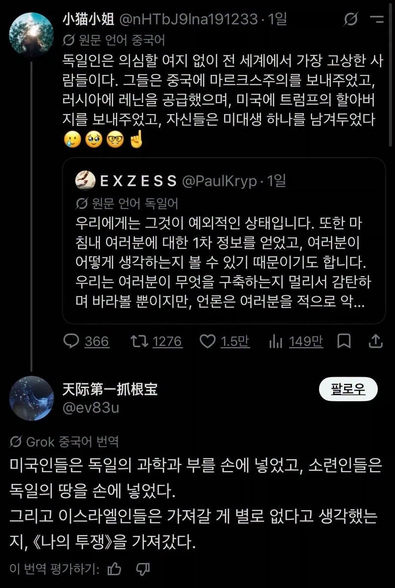

도이치의 은혜는 하늘과 같아서

도이치의 은혜는 하늘과 같아서
아낌없이 주는 나무 ㅠ
좀 치네
그리고 우리나라에도 오페르트를 보내주면서 한국근현대사 흐름에도 진짜 돌이킬수없는 획을 그어버렸다..
진짜 다시 생각해도 무덤 도굴은 씨발...
팩트)금마는 유대인이다
캬
독일 제국이 러시아에 레닌을 발사해서 전쟁 광탈시킨 건 신의 한수긴 했음
그래놓고 서부전선에서 어떻게든 이겼어야 했는데 못해서 문제였지
다큐멘터리에서 말하더군.
독일 제국 최고의 비밀 병기였다고.
독일은 대체.. 얼마나 악독한 거냐고..
전세계를 쥐고 흔들고 있잖아...
ㅋㅋㅋㅋㅋㅋㅋㅋㅋㅋㅋㅋㅋㅋㅋ
나의 투쟁을 가져간 그들은 신시대의 미대 떨어진 콧수염 그자체가 되었다
전세계는 독일의 유산으로 살아가고있다
살아가고?
진짜 이렇게보니 세계사에 끼친 영향이 개좆되는구나
오...
미대 탈락한 고졸만 가져가다니 소박하다 소박해
산신령이 은도끼 금도끼도 같이 주겠다 야
이스라엘 ㅅㅂㅋㅋ
그 말 취소해라 그는 “오스트리아인“이다
중국에는 뭘 줬을까.
맞아맞아 그건 사실이지.